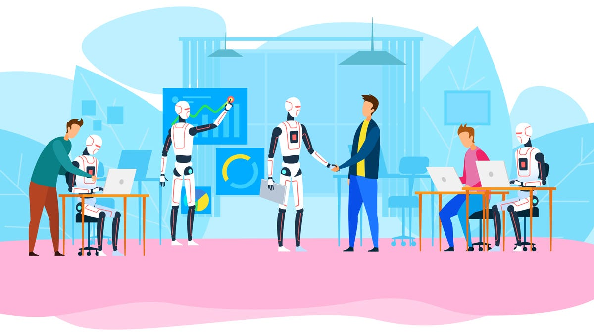

In the ever-evolving landscape of technology, the rise of Artificial Intelligence (AI) is reshaping the way we work. From automation to advanced data analysis, AI has profound implications for the future of employment.
One of the most discussed aspects of AI is its role in automation. As machines become more sophisticated, routine tasks are increasingly performed by AI systems, leading to concerns about job displacements.
According to a study: (AI, automation, and the future of work: Ten things to solve for), automation is expected to affect various industries, with both positive and negative consequences.
While automation may lead to job displacement in certain sectors, there is a growing emphasis on upskilling and reskilling the workforce.
Organizations are investing in progress to train employees in new skills, preparing them for the jobs of the future that require a combination of technical and soft skills.
Rather than replacing human workers, AI is often viewed as a collaborative tool.
For example, in customer service, AI chatbots can handle routine queries, allowing human employees to focus on more complex issues that require empathy and problem-solving skills.
[AI Collaboration]

As AI becomes more integrated into the workplace, ethical considereations arise. Issues such as bias in AI algorithms and the ethical use if AI in decision-making processes need careful examinations.
Companies are urged to adopt ethical AI practices to ensure fair and responsible implementation.
The introduction of AI is leading to the evolution of job roles. New positions are emerging, such as AS trainers, ethicists, and AI system maintenance specialists.
The workforce of the future will require individuals with a diverse set of skills to navigate the AI-driven landscape.
The impact of AI on the future of work is multifaceted. While automation raises concerns about a job displacement, proactive measure like upskilling and ethical considerations can help harness the potential of AI for the betterment of society.
As we embrace this technological revolution, it is crucial to strike a balance between efficiency and human-centric values in the workplace.